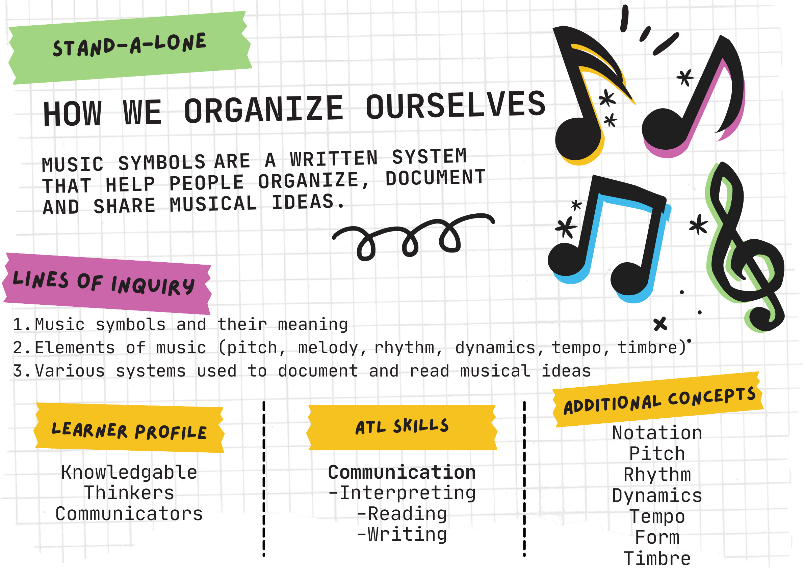
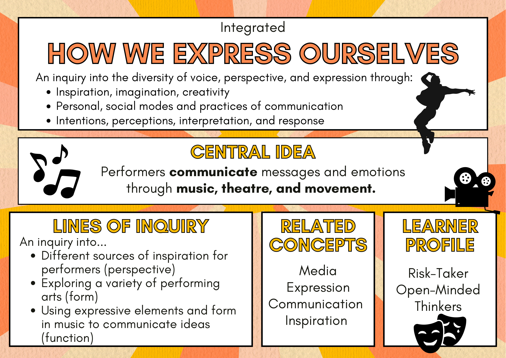
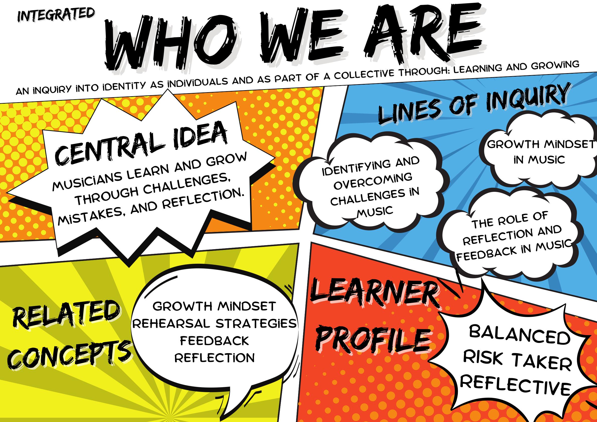
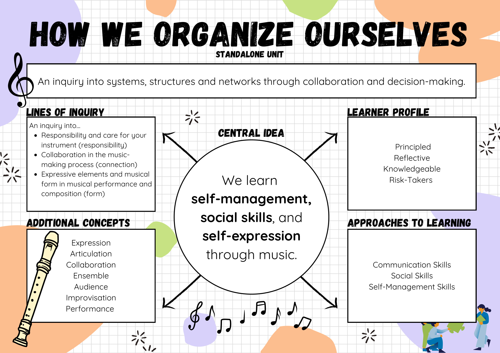
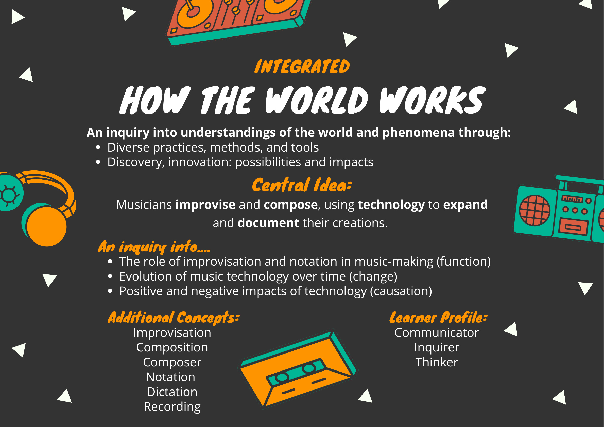
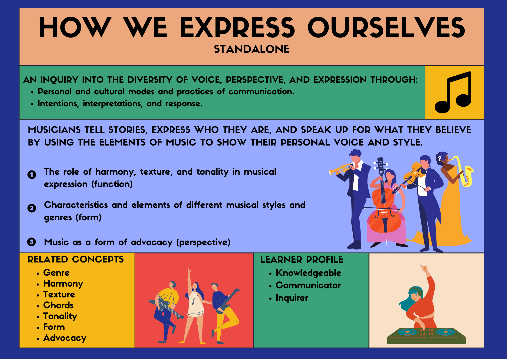
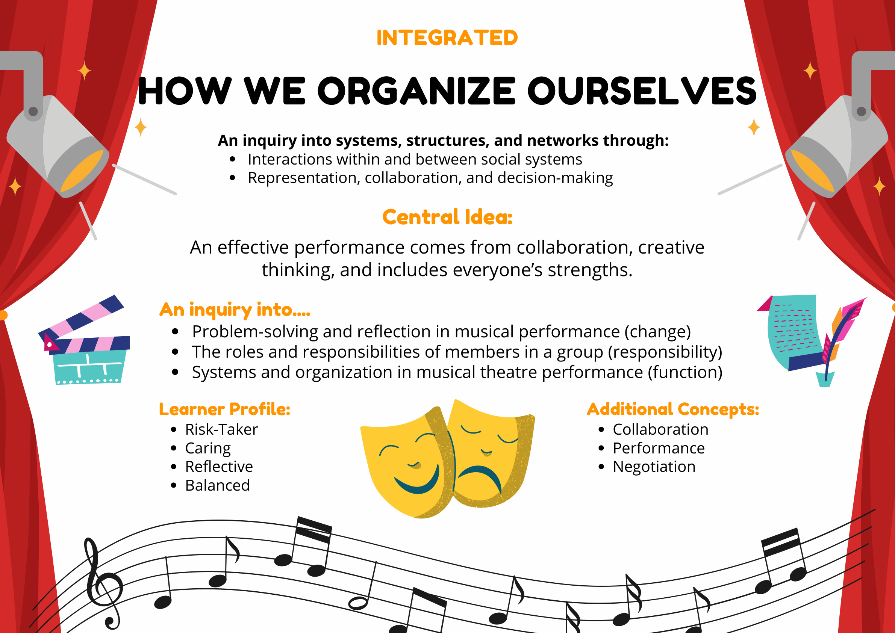

Teaching Standards & My Practice
Reflections aligned to the IB Programme Standards and Practices, evidenced through artefacts from my music classroom across the PYP.
My instructional vision centers around Dewey's theory that education serves to help children realize their capabilities and powers to participate in community life and share in the collective social consciousness (Dewey, 1897). Traditional education models view school as "a place where certain information is to be given, where certain lessons are to be learned, or where certain habits are to be formed" in preparation for a "remote future" (Dewey, 1897, p. 4). Curriculums in traditional schools are, as a result, directed to discover the shortcomings of individuals so that instructors might eliminate deficits and errors and prepare students for vocational work after schooling (Bobbit, 2013). However, there are flaws in this approach, not the least of which is that educators and students alike cannot conceive of this imagined future.
According to Dewey (1897), the conditions of society twenty years from now are "impossible to foretell" (p. 3). Thus, "it is impossible to prepare the child for any precise set of conditions" (p. 3). My instructional vision is grounded in the belief that education should develop individual student capacity in an additive manner. In doing so, educators enable students to develop full use of their powers in skills so that they might enter into society able to adjust their individual activity "on the basis of social consciousness" (Dewey, 1897, p. 9). It is through these means that education becomes "the fundamental method of social progress and reform" (Dewey, 1897, p. 9). Therefore, my instructional vision seeks to create an educational practice that is relevant, engaging, and action-oriented to create a more just and equitable society. This ideal educational environment demands educators stop teaching for a distant and far-off tomorrow, in which they operate within the parameters of an existing status quo. Instead, teachers and school leaders must focus on creating a learning environment that empowers students by building up their individual capacities and social capital so that they might advocate for their own success in addition to the collective betterment of society.
The term "capacity" refers to a student's ability to learn independently and make informed decisions. Schools should be focusing on helping students pursue and research their interests and develop their individual skills and powers. To be done most efficiently, educators must take an additive approach to instructional practices and curricular design. Additive instruction rejects the traditional notion of deficit thinking. In deficit thinking, educators look for errors, mistakes, and deficiencies (Bobbit, 2013). However, in an additive approach, teachers consider a student's prior knowledge and experiences and build a responsive, relevant curriculum that enhances and adds to student funds of knowledge. Consequently, the ideal school has a deep and ongoing understanding of a societal context and social conditions and a child's powers and interests. Only with these factors in mind can a school prepare a child for an unknown "future life" and ensure students have "full and ready use of all his capacities" (Dewey, 1897, p. 2). This speaks to what I believe is one of the primary objectives of education: learning how to learn. One of the ultimate goals in my instructional vision is to help students develop the ability to teach themselves (Bransford, Brown, & Cocking, 1999).
The teacher's role in such a vision for education is one of mentor, observer, and resource. The teacher is not there to impart abstract facts and irrelevant skills to passive learners but instead to empower an individual child's capacity for research, questioning, critical thinking, and actionable planning. Such an understanding requires a fundamental rethinking of traditional, subject-specific learning outcomes and instead refocuses the conversation around what conditions most suit a child's psychological development. As such, it becomes necessary for educators to reshape their approach to the traditional classroom environment. Educators must facilitate an open community of learners, with safety for mistakes and space for curiosity. While there is no one "best method" for teaching (Bransford, Brown, & Cocking, 1999), it is possible to reimagine the structure of education through an increased focus on 1) inquiry-based academic tasks, 2) metacognitive approaches to instruction, and 3) the construction of a caring, positive learning environment.
Teachers also must redefine what relevant, productive academic tasks look like in schools. Doyle and Carter (1984) describe academic tasks in schools as "embedded in an evaluation system under conditions of ambiguity and risk" (p. 151). Traditional academic tasks are low risk and low ambiguity; students have clear parameters and need to have the correct answers to be successful. While there is a time and place for such instruction, there is also a necessity to incorporate academic tasks that have increased risk and ambiguity. These academic tasks would be riskier, as students are challenged to address conceptual, debatable topics without clear answers. This requires students to generate original thoughts and conclusions, and thus, there is no clear, "right" answer. For example, rather than completing a worksheet detailing specifics about a scientific concept, students could conduct a series of experiments and then use their findings to draw conclusions that apply to a related project. As Bransford, Brown, and Cocking (1999) state, "assessments must tap understanding rather than merely the ability to repeat facts or perform isolated skills" (p. 19). By creating academic tasks with high risk and high ambiguity, teachers can "test deep understanding rather than surface knowledge" (Bransford, Brown, & Cocking, 1999, p. 20).
In addition to restructuring student evaluation, my instructional vision also calls for the use of a metacognitive approach to design instruction. Such an approach "can help students learn to take control of their learning by defining learning goals and monitoring their progress in achieving them" (Bransford, Brown, & Cocking, 1999, p. 18). Metacognitive instruction can "enhance student achievement and develop in students the ability to learn independently" (Bransford, Brown, & Cocking, 1999, p. 21). Metacognition in the educational context involves the "control, monitoring, and regulation of the cognitive process" (Anderson et al., 2001, p. 43). Teachers can incorporate metacognitive practices in the classroom in various ways to help students develop self-knowledge. Self-awareness allows students to understand the "breadth and depth" of their knowledge, as well as their academic strengths and weaknesses (Anderson et al., 2001). Perhaps most importantly, self-knowledge also enables individuals to understand better their motivations, interests, and capacities (Anderson et al., 2001). This speaks to Dewey's (1987) assertion that education should empower the individual student for the "full and ready use of all his capacities," as well as the "complete possession of all his powers" (p. 2). Such practices are invaluable to helping a student become a lifelong learner. Therefore, in my instructional vision, metacognition would be at the forefront of teacher thinking and understanding as they make decisions about learning experiences.
Instructional practices that center around inquiry and metacognition require a specific kind of learning environment. As Bransford, Brown, and Cocking (1999) state, "learning is influenced in fundamental ways by the context in which it takes place" (p. 25). An ideal classroom would be positive, productive, and based on authentic caring. Such a classroom would see students taking responsibility for their own learning and encourages academic risk-taking and excitement for education (Bransford, Brown, & Cocking, 1999). However, this can only happen in an environment where students feel safe, secure, and supported in their inquiry. The teacher can facilitate such an environment by fostering intellectual camaraderie to create a cohesive community of learners. This would manifest in practices that encourage mistakes, problem-solving, exploration, and collaboration. Educators achieve such a dynamic through "humane and compassionate pedagogy inscribed in reciprocal relationships" (Valenzuela, 1999, p. 343). Rather than focusing on compliance and obedience, educators must practice unconditional, authentic caring, focusing on the well-being of students emotionally, socially, and academically (Valenzuela, 1999). With authentic caring as the basis for effective teaching and learning, teachers can better meet children where they are and take an additive approach to instruction.
With this understanding of what a successful classroom looks like, it is the school leader's responsibility to create the optimal conditions for such teaching practices. First and foremost, the school leader must emphasize the ultimate "why" of the organization: empowering students so that they might advocate for their own success in addition to the collective betterment of society. As stated earlier, I believe this is achieved by building up a student's capacities and social capital. To do this, the school leader must orient the school in the use of productive and positive approaches to instruction that reject the notion of student deficiencies and instead take an additive approach to education. Schools must approach curriculum development and student assessment by building off of student skills and backgrounds. Educators must meet students where they are culturally, linguistically, and experientially. This involves providing adequate training and support for teachers to comprehend better the background of their students and the broader context of their school community. It also means that school leaders must create a norm of authentic caring amongst both staff and students. Modeling and encouraging this practice benefits teachers and students alike and creates a positive, productive learning environment.
The instruction vision outlined here is a brief overview of my beliefs around the ultimate goals of education and the necessary characteristics of a successful school and classroom environment. By meeting students where they are and building a positive learning environment, teachers can create an educational experience that highlights inquiry and metacognition. This, in tandem with an additive approach to education, can translate into a meaningful, engaging, and relevant curriculum. My entire instructional vision centers around an ethos of authentic caring for students as whole people emotionally, socially, and academically. Ultimately, my instructional vision comes back to Dewey's original vision. Education serves as a way to introduce children to community life and help them realize their capabilities and powers to find fulfillment, success, and opportunities to become changemakers in the collective society.
Works Cited
- Anderson, L. W., Krathwohl, D. R., Airasian, P. W., Cruikshank, K. A., Mayer, R. E., Pintrich, P. R., & Wittrock, M. C. (2001). A taxonomy for learning, teaching, and assessing: A revision of Bloom's taxonomy of educational objectives.
- Bobbitt, F. (2013). Scientific method in curriculum-making.
- Bransford, J. D., Brown, A. L., & Cocking, R. R. (1999). How people learn: Brain, mind, experience, and school. National Academy Press.
- Dewey, J. (1925). My pedagogic creed.
- Doyle, W., & Carter, K. (1984). Academic tasks in classrooms.
- Valenzuela, Angela. (1999). Subtractive Schooling: U.S.-Mexican Youth and the Politics of Caring. SUNY Series, The Social Context of Education.
IB Teaching and Learning Standards
Reflections and evidence aligned to the IB Approaches to Teaching. Click any evidence field to edit directly.
Featured Units
Grade 3



Grade 4



Grade 5

